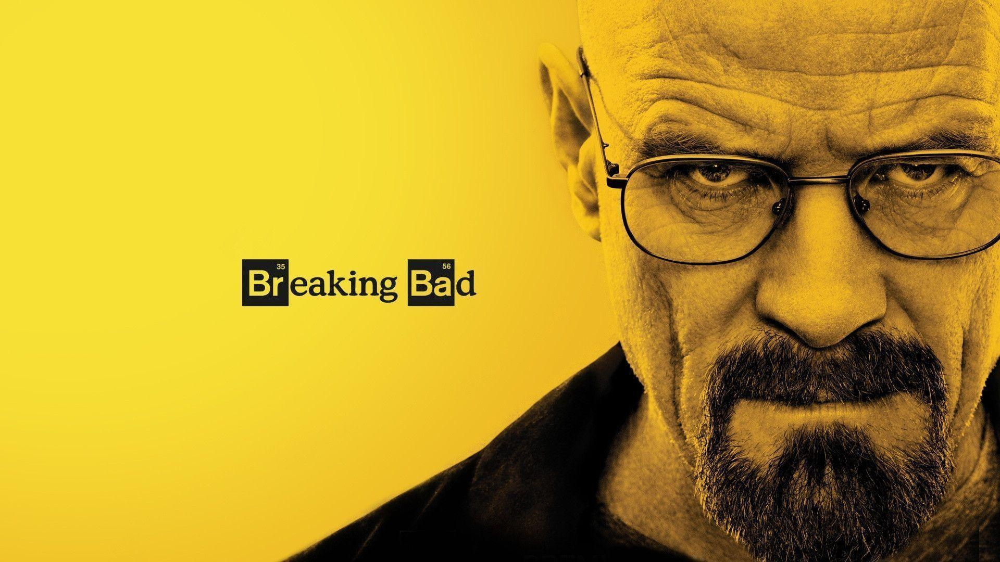

Breaking Bad is an American crime drama TV series created and produced by "Vince Gilligan" for AMC. It's a show which is set in Albuquerque, New Mexico, USA, the series follows Walter White, an underpaid, overqualified, and dispirited high-school chemistry teacher who is struggling with a recent diagnosis of stage-three lung cancer. Through desperation Walter turns to the world of crime and partners up with a former student, Jesse Pinkman, to produce and distribute methamphetamine to secure his family's financial future before he dies, while trying to keep himself safe from the dangers of the criminal world and not being caught by the drug enforcement agency where his brother-in-law Hank Schrader works.
